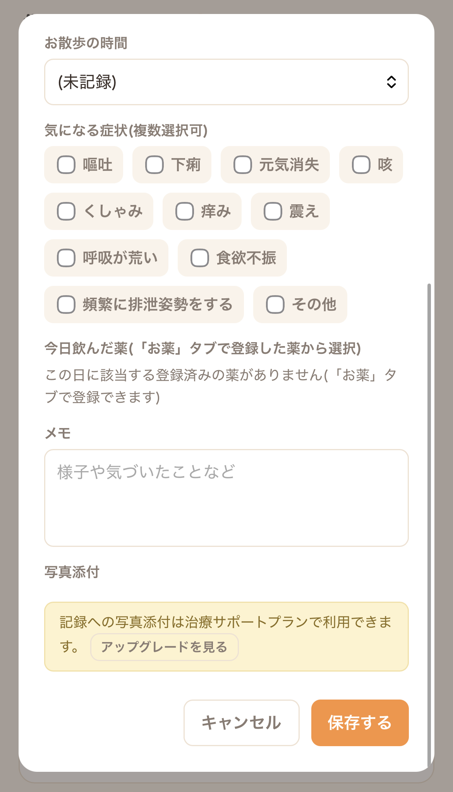
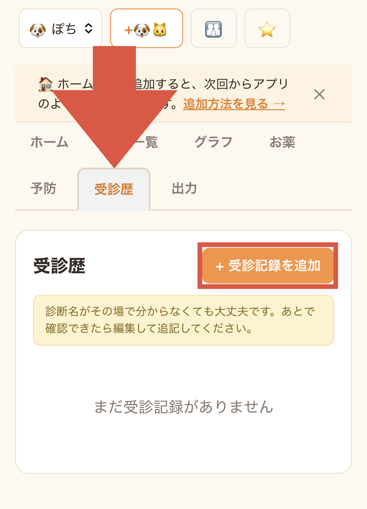
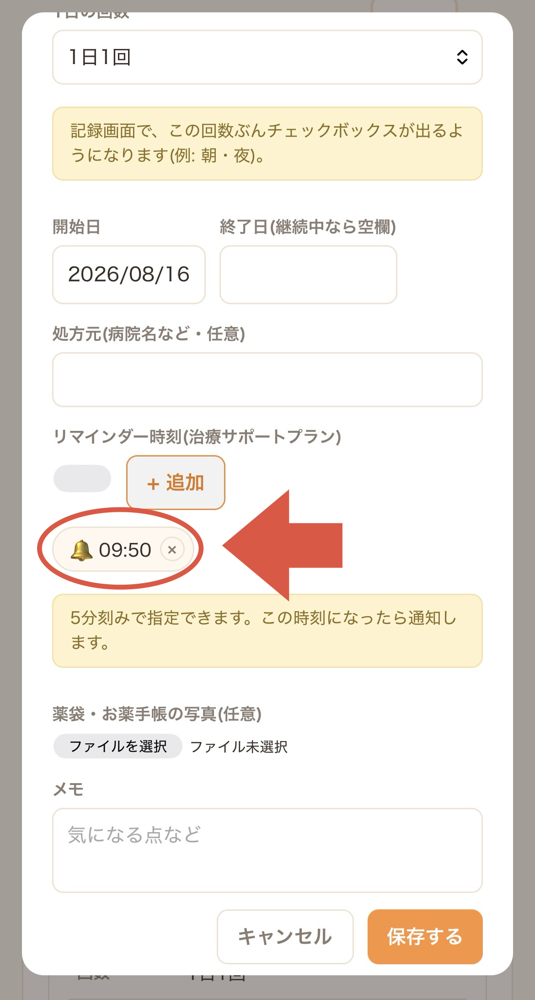

どうぶつ健康手帳 使い方ガイド
はじめての方が、基本の記録から必要に応じて使う機能まで順番に確認できるガイドです。スマートフォンでの利用を想定しています。
1. どうぶつ健康手帳でできること 基本機能
どうぶつ健康手帳は、ペットの体重、食欲、飲水、排泄、症状、お薬などを日々記録し、変化を振り返るための健康管理ツールです。記録した内容はグラフやPDFレポートにまとめ、受診時に獣医師へ共有できます。
手順
- Googleアカウントでログインする。
- 最初のペットを登録する。
- 日々の様子を記録する。
- グラフや記録一覧で変化を確認する。
- 必要に応じて受診用レポートを作成する。
2. ログインして、すぐ開けるようにする 基本機能
Googleアカウントでログインして利用します。スマートフォンのホーム画面に追加しておくと、通常のアプリのようにすぐ開けます。
手順
- SafariまたはChromeでどうぶつ健康手帳を開く。
- 「Googleで続ける」を押し、利用するGoogleアカウントでログインする。
- iPhoneでホーム画面追加の案内が表示された場合は「追加方法を見る」を押す。
- 案内を閉じた後や表示されない場合は、このセクションの「iPhoneでホーム画面に追加する方法」を押す。
- 画像の手順に従い、ホーム画面へ追加する。
- 次回からホーム画面のアイコンを押して開く。


ホーム画面への追加の詳しい手順（画像つき8段階）は iPhoneでホーム画面に追加する方法 を参照してください。
- LINEやInstagram等のアプリ内ブラウザではGoogleログインできない場合があります。その場合はSafariまたはChromeで開き直してください。
- ホーム画面追加の案内バナーは一度閉じると再表示されません。追加方法はこのガイドの上のリンクからいつでも確認できます。
3. ペットを登録する 基本機能
最初に、健康記録をつけるペットの基本情報を登録します。複数のペットを登録している場合は、画面上部から表示するペットを切り替えられます。
手順
- 「＋最初のペットを登録する」または画面上部の「＋ペット追加」を押す。
- 名前を入力する。
- 種類を「犬」「猫」「その他」から選ぶ。
- 必要に応じて品種と誕生日を入力する。
- 「登録する」を押す。
- 複数登録している場合は画面上部のペット名から切り替える。


- 名前は必須、品種と誕生日は任意です。
- ペットを削除すると、そのペットの記録、写真、お薬、予防、受診歴も削除され、元に戻せません。
4. 毎日の様子を記録する 基本機能
体重、食欲、飲水、便・尿、お散歩、症状、投薬、メモなどを一つの画面から記録できます。すべてを埋める必要はなく、その日に確認できた項目だけで構いません。
手順
- 「ホーム」または「記録一覧」を開く。
- 「＋今日の記録を追加」または「＋記録を追加」を押す。
- 日付を確認する。
- 体重、食欲、飲水、便、尿等、必要な項目を入力する。
- 気になる症状があれば選択する。
- 登録済みのお薬を飲んだ場合は、該当する投薬欄をチェックする。
- 必要に応じてメモや写真を追加する。
- 「保存する」を押す。




- 便の状態は「糞便スコアの見本」を参考にでき、過去の日付も記録できます。
- 写真添付は治療サポートプランの機能で、1記録につき最大4枚まで添付できます。
5. 記録を見返す・修正する 基本機能
保存した記録は、ホーム画面の「最近の記録」または「記録一覧」から確認できます。入力間違いや後から分かった内容は編集できます。
手順
- 「記録一覧」タブを開く。
- 確認したい日の記録を探す。
- スマートフォンでは記録カードを開いて詳細を確認する。
- 写真がある場合は「写真を表示」を押す。
- 内容を直す場合は「編集」を押す。
- 修正後に「保存する」を押す。

- 「削除」は取り消せません。入力内容を直す場合は「編集」を使ってください。
6. お薬と投薬状況を管理する 基本機能
処方されたお薬の名前、用量、1日の回数、期間などを登録できます。登録したお薬は毎日の記録画面に表示され、飲ませた回数をチェックできます。
手順
- 「お薬」タブを開く。
- 「＋お薬を登録」を押す。
- 分かる範囲で薬の名前、用途、用量を入力する。
- 1日の投薬回数と開始日を設定する。
- 必要に応じて終了日、病院名、薬袋の写真、メモを追加する。
- 「保存する」を押す。
- 毎日の記録画面で飲ませた回数にチェックを入れる。
- 服用を一時的に止める場合は「休薬にする」を使う。


- 薬品名や用量が分からない場合は空欄でも登録できます。
- 薬袋や診療明細の写真を残すと次回受診時の確認に役立ちます。
- 投薬リマインダーは治療サポートプランの機能です。
7. 予防と受診の記録を残す 基本機能
ワクチン、狂犬病予防、フィラリア・ノミダニ予防の実施日や次回予定日を記録できます。動物病院を受診した際の相談内容、診断、治療内容も残せます。
手順
- 予防記録は「予防」タブを開く。
- 「＋記録を追加」を押し、種類、実施日、次回予定日等を入力して保存する。
- 受診記録は「受診歴」タブを開く。
- 「＋受診記録を追加」を押す。
- 受診日、病院名、相談内容、診断名、治療内容等を入力して保存する。



- 分からない項目は空欄でもかまいません。
- 次回予定日を入力するとホーム画面から確認しやすくなります。
- 狂犬病は犬を登録した場合だけ選択肢に表示されます。
8. 記録の変化をグラフで見る 基本機能 一部 治療サポートプラン
日々の記録がたまると、体重や症状の変化をグラフで確認できます。治療サポートプランでは、食欲、お散歩、日々の状態、症状タイムライン、より長い期間や指定期間の表示も利用できます。
手順
- 「グラフ」タブを開く。
- 表示期間を選ぶ。
- 体重の推移を確認する。
- 症状の出現回数やタイミングを確認する。
- 詳細を確認する場合は「記録一覧」へ戻る。


- グラフは入力された記録を整理するもので、診断や異常判定を行うものではありません。
- 記録日が少ない場合は変化を十分に確認できないことがあります。
9. 記録を獣医師に共有する 無料枠 月1回 追加購入
指定期間の健康記録を、診察時に見せやすいレポートとして表示・印刷・PDF保存できます。
手順
- 「出力」タブを開く。
- レポートに含める開始日と終了日を選ぶ。
- 「レポートを印刷 / PDF保存」を押す。
- 印刷画面から印刷または共有・PDF保存を選ぶ。
- 診察時にスマートフォンで表示するかPDFを共有する。


出力されるレポートの例は サンプルPDF を参照してください。iPhoneでのPDF保存の詳しい操作は iPhoneでレポートをPDF保存する方法 を参照してください。
- 1回の出力範囲は最大31日間です。それより長い期間は複数回に分けてください。
- 無料枠は月1回です。追加出力は買い切りの追加パックを利用できます。
- 毎月1日に無料回数が復活します。無料回数は1以上には増えません。
10. 家族共有と投薬リマインダーを使う 家族共有 追加席 リマインダー 治療サポートプラン
必要に応じて、家族との記録共有や投薬リマインダーを利用できます。写真添付、拡張グラフ、「今週のようす」等も治療サポートプランに含まれます。
家族共有の手順
- 画面上部の「家族共有」を押す。
- 招待する相手のGoogleアカウントのメールアドレスを入力する。
- 「招待メールを送信」を押す。
- メールが届かない場合は招待リンクをコピーして共有する。
- 招待された人はリンクを開き、対象のGoogleアカウントでログインする。


投薬リマインダーの手順
- 「お薬」タブで「投薬リマインダー通知を有効にする」を押し、端末の通知を許可する。
- お薬を登録または編集する。
- リマインダー時刻の「＋追加」を押す。
- 通知する時刻を選び、時刻が追加されたことを確認する。
- 「保存する」を押す。



- 家族共有の追加メンバー枠は1人につき月額200円です。招待相手にはGoogleアカウントが必要です。
- 投薬リマインダー、記録への写真添付、拡張グラフ、「今週のようす」等は月額480円の治療サポートプランに含まれます。
- 通知は端末・OS・ブラウザ設定にも左右されます。